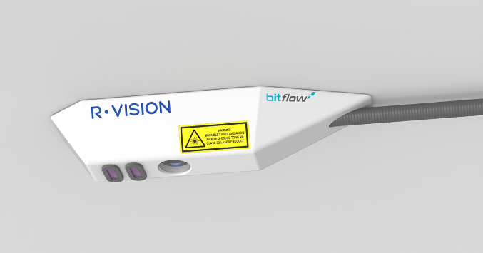
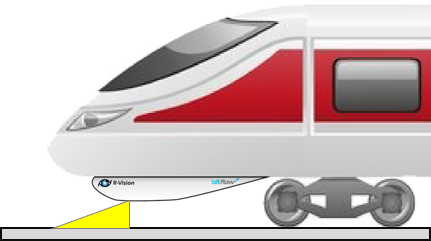
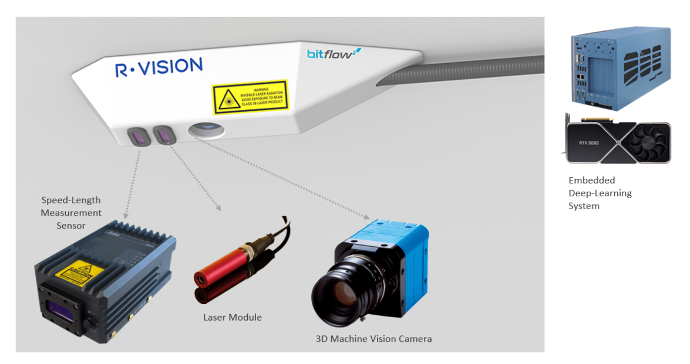
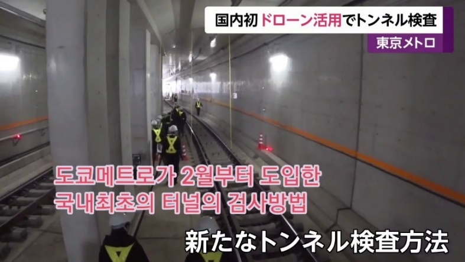
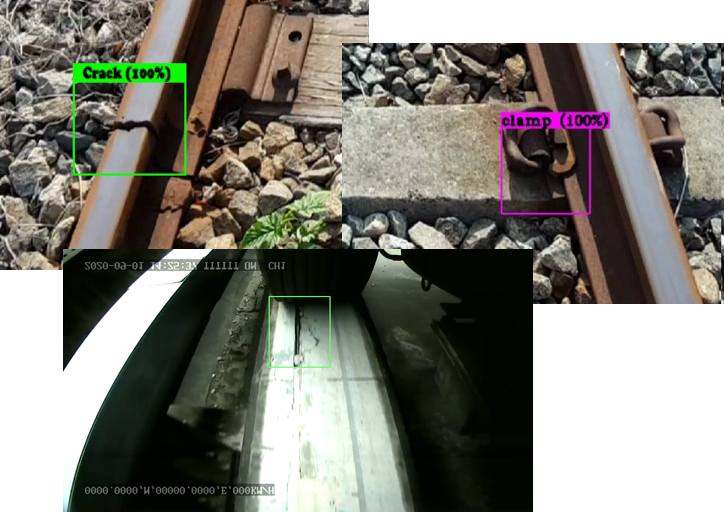
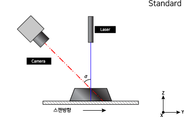
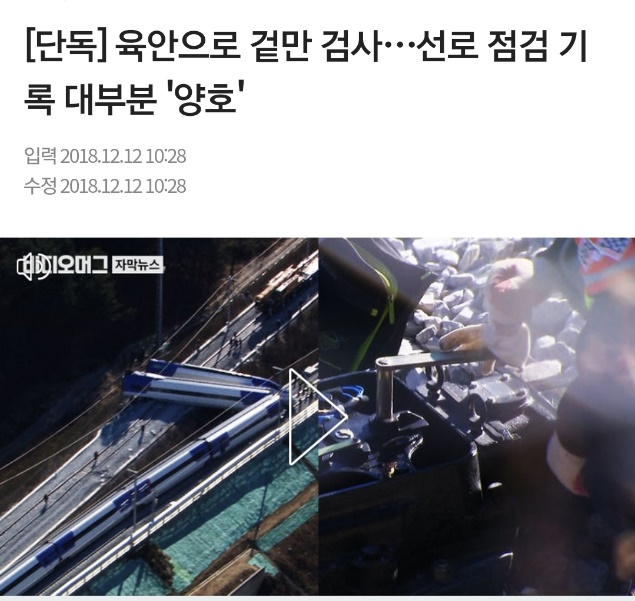

사업계획서 |
□ 일반현황
창업 아이템 명 | 딥러닝 머신비전 기술을 이용한 열차 선로 검사 시스템 | |||||||||
창업 지원 분야 | ■ IT융합 □ 소셜벤처 □ IT융합 □ 기계 □ 항공 □ 전기전자 □ 건축 □ 환경에너지 □ 지식콘텐츠 □ 제조 □ 유통 □기타(____________________) ※ 중복 체크 가능, 해당항목 없는 경우 기타항목에 분야를 자유롭게 작성해주세요. | |||||||||
신청자 성명 | 김성준 | 생년월일 | 1976.07.02 | 성별 | 남 | |||||
직업 | 일반인 | 사업자 등록증 소유 여부 | O | |||||||
2019.09.19 | ||||||||||
팀 구성(신청자 제외) | ||||||||||
순번 | 직급 | 성명 | 담당업무 | 주요경력 | 비고 | |||||
1 | 부장 | 홍승영 | 시스템엔지니어 | Micfo LLC, 서울과학기술대 정보통신 | ||||||
2 | 과장 | 김진성 | 소프트웨어엔지니어 | Daum, 세종대학교 정보보안 전공 | ||||||
3 | 과장 | 송정석 | 시스템엔지니어 | Blueweb, 정보통신 전공 | ||||||
□ 창업아이템 개요(요약)
창업아이템 소개 | <열차 하단에 장착하는 “열차의 눈” 딥러닝 머신비전 선로 검사 시스템> 1. 핵심기능 - 열차 하단에 장착하는 제품으로 3D 머신비전 카메라로 선로 단면의 파형 분석 - 카메라 영상을 딥러닝으로 분석하여 선로 체결부의 비정상 여부 탐지 - 레이저 비접촉 속도/길이 측정 센서로 결함이 발견된 선로상 위치 추적 2. 소비자층 - B2B, 중전철/경전철/일반철도 운영사 3. 사용처 - 육안으로 열차 선로를 검사하는 철도 운영사에 사용되어 선로 검사 자동화 실현. | |
창업아이템의 차별성 | <2020년 중소기업기술정보진흥원 디딤돌 R&D 과제에 선정, 시제품 제작 중> 1. 딥러닝 기반의 선로 검사 시스템 - 패턴 매칭 알고리즘 기반의 머신비전 선로 검사 시스템과 차별화 됨 2. 레이저 3D 스캐닝 방식을 통한 선로 표면 정밀 탐지 - 오차가 마이크로 미터 단위인 정확한 계측기 도입과 탐지 알고리즘 구현. 3. 멀티 플랫폼 지원 - 철차륜/고무차륜/모노레일 등 다양한 열차 플랫폼에 적용 가능한 설계. | |
국내외 목표시장 | ※ 철도시장 (2020): 세계 철도시장 232조원, 국내시장 5~6조원 1. 도시철도 비전검사기 시장 (2020년, 대당 7억원 기준) - 세계 도시철도 비전 시장 (820노선, 5,740억원) - 국내 도시철도 비전 시장 (25노선, 175억원) => 국내 시장 175억원 중 30% 인 53억원, 세계 시장의 30%인 1,722억원 목표 2. 판매전략 - 당사 고객사인 의정부경전철(우진메트로)과 우이신설경전철(우이신설경전철운영)에 - SIMENS 등 고무차륜 방식 열차 노선 운영사 중심 영업 후 철차륜으로 대상 확대 - 당사 등기이사 Raz Nagar(이스라엘)를 통한 중동/미주지역 제품 영업 - 글로벌 엑셀러레이터와 협업을 통한 해외 제품 확대. | |
이미지 |  |  |
< 제품 컨셉 사진 > | < 열차 장착 및 구동 예 > | |
 | ||
< 전체 시스템 구성도 > | ||
1. 문제인식(Problem) |
1-1. 창업아이템의 개발동기
 <문제점>
◦ 육안에 의존하는 경전철/중전철
-승객수가 많은 경부선과 같은 노선에는
80억원을 호가하는 선로 결함 탐지 시스템이 도입되어 있으나, 경전철과 중전철에는
예산 부족과 철도 플랫폼 상 문제로 미도입됨.
<개발동기>
◦ 검사 방식의 문제점과 비효율
-경전철은 보통 2년에 한번 선로를 직접 걸어다니며 육안 검사 실시.
-창업 팀은 경전철 정보시스템을 운영하며 비효율을 체험하고 개선하고자 연구를 시작.
<해결방안>
◦ 머신비전 기술에 의한 육안검사 자동화
-AI 딥러닝 시각지능 기술이 발달함에 따라 컴퓨터 SW 기술로 육안검사 대체 가능
-3D 비전카메라의 광삼각법에 의한 정량적 파손 수치 도출 가능.
 <그림 2 딥러닝 선로 결함 탐지 테스트> |  <그림 3 광삼각법 구조> |
1-2 창업아이템의 목적(필요성)

<제품의 목적>
◦ 머신비전 기술로 열차 선로 육안검사 자동화
1) 도보로 선로를 횡단하며 검사하는 방법의 안전/비용 문제 해결
2) 육안검사의 비정확성 문제 해결
◦ 해외 솔루션의 제품 독점 이슈 해결
-제품 국산화로, 관련 해외 제품군의 수입문제,
외화 지출 문제 해결
2. 실현가능성(Solution) |
2-1. 창업아이템의 개발·사업화 전략
◦ 비즈니스 모델
1)비전 시스템 판매
- 대당 5~7억원, 무상보증 2년
2)비전 시스템 운영/유지보수 대행
- 연간 1억원, 상주 관제인원 파견
3)비전 시스템 유상보증
- 연간 1.5억원
4)비전 검사 대상 확대된 제품 개발
- 전차선(전력선) 감시, 터널 내 화재 감시 등
◦ 제품 구현 정도
-공정률 30% : 딥러닝 SW 타당성 검증, 센서 및 카메라 연계 프로그래밍 진행
◦ 제작 소요기간 및 제작방법
-약 6개월 소요, 자체 제작
< 사업 추진일정 >
추진내용 | 추진기간 | 세부내용 |
테스트 HW 시스템 구성 | 2020.10.01. ~ 2020.11.30. | 선정된 센서 모듈 및 HW 구매 및 조립 |
투자 유치 | 2020.11.01. ~ 2021.01.31. | TIPS 운용사로 부터 투자 유치 (1~3억원) |
센서 연계 프로그래밍 | 2020.11.01. ~ 2020.04.31. | 1) 센서 연계 SW 개발 (C, Rust) 2) 선로 표면 패임/굴곡/기울기 측정 알고리즘 |
SW 개발자 충원 | 2021.01.01. ~ 2021.04.30. | SW 개발 팀원 충원 (2명 이상) |
하우징 제작 | 2020.04.01. ~ 2021.05.31. | 1) 이동거리 측정센서 내한 설계 2) 전체 모듈 탑재 하우징 설계 및 제작 |
시제품 개발완료 | 2020.06.01. ~ 2021.08.31. | 하우징과 결합한 열차 장작장비 구축완료 |
초도 운행 테스트 | 2020.07.01. ~ 2021.09.30. | 의정부경전철 고무차륜 차량 장착 및 시범 운행 |
딥러닝 데이터 분류 및 학습 | 2020.07.01. ~ 2021.09.30. | 현장 습득 정상/비정상 상태 이미지 기반의 딥러닝 학습 절차 수행 |
상용 제품 개발 완료 | 2020.10.01. ~ 2020.11.30. | 딥러닝 기술이 포함된 제품 구축 완료 |
국내 세일즈 | 2021.11.01. ~ 2022.12.31. | 의정부경전철 시범운행 종료 후 계약체결 우이신설경전철 시범운행 제안 용인, 부산김해 등 시범운행 제안 |
글로벌 진출 | 2021.11.01. ~ 2022.12.31. | 1) 이스라엘 국적 등기이사를 통한 2) 창진원 GOIK 행사 참가, 엑셀러레이터를 통한 해외 행사 참가 및 진출 |
2-2. 창업아이템의 시장분석 및 경쟁력 확보방안
※ 기능·효용·성분·디자인·스타일 등의 측면에서 현재 시장에서의 대체재(경쟁사) 대비 우위요소, |
◦
-
◦
-
3. 성장전략(Scale-up) |
3-1. 자금소요 및 조달계획
※ 시제품 개발까지 1억원, 상용제품 개발까지 최대 3억원 소요.
◦ 조달 완료
-중기부 중소기업기술정보진흥원 R&D 지원금 1.2억원
-기술보증기금 1억원
◦ 추가 조달 계획
-투자유치 1~3억원
-TIPS 5억원
< 사업화자금 집행계획 >
비 목 | 산출근거 | 금액(원) |
재료비 | •레이저 속도/길이 센서 (Proton SL mini 3060 세트) | 15,400,000 |
•3D 머신비전 카메라 (PhotonFocus MV1 x 2세트) | 13,200,000 | |
•센서 히팅 모듈 및 하우징 | 1,000,000 | |
•산업용 임베디드 PC | 2,500,000 | |
•딥러닝 워크스테이션 | 6,700,000 | |
•영상 처리용 GPU (GTX 1660 Ti) | 400,000 | |
시제품제작비 | •시제품 하우징 제작 외주용역 (철제) | 12,000,000 |
인건비 | •전기전자공학 전공 인턴 | 14,400,000 |
•컴퓨터/소프트웨어 전공 인턴 | 14,400,000 | |
•센서 연계 프로그래밍 엔지니어 (C, C++, 경력 3년 이상) | 50,000,000 | |
•딥러닝 기계학습 엔지니어 (석사 이상, 또는 경력 3년 이상) | 60,000,000 | |
연구활동비 | •해외 컨퍼런스/박람회 참가비, 영업 활동비 | 7,000,000 |
합 계 | 197,000,000 | |
3-2. 시장진입 및 성과창출 전략
3-2-1. 내수시장 확보 방안
※ 내수시장을 중심으로 주 소비자층, 주 타겟 시장, 진출 시기, 시장진출 및 판매 전략, 그간 성과 등을 구체적으로 기재 |
◦
-
3-2-2. 해외시장 진출 방안
※ 해외시장을 중심으로 주 소비자층, 주 타겟시장, 진출시기, 시장진출 및 판매 전략, 그간 성과 등을 구체적으로 기재 |
◦
-
4. 팀 구성(Team) |
4-1. 대표자 및 팀원의 보유역량
◦ 대표자 현황 및 역량
<학력> 한양대학교 기계공학 학사 / 연세대학교 컴퓨터공학 석사
<경력> LG CNS (융합솔루션팀) 외 3개 기업에서 SW 엔지니어 16년
<수상> 미래창조과학부 모바일 앱공모전 우수상 / TopCoder Monthly Fun Hackaton 1위
<이력> 2019 창진원 이스라엘 엑셀러레이팅 선정 / 2020 기정원 디딤돌 R&D 선정
/ 2020 창진원 재도전 IR 3위
◦ 팀원현황 및 역량
※현재 맨파워가 강한 팀은 아니지만, 추가 고용을 통해 보완계획임
순번 | 직급 | 성명 | 주요 담당업무 | 경력 및 학력 등 | 채용시기 |
1 | 부장 | 홍승영 | 시스템엔지니어 | Micfo LLC, 서울과학기술대 정보통신 | ’20. 7 |
2 | 과장 | 김진성 | 소프트웨어엔지니어 | Daum, 세종대학교 정보보안 전공 | ’20. 7 |
3 | 과장 | 송정석 | 시스템엔지니어 | Blueweb, 정보통신 전공 | ’20. 7 |
◦ 추가 인력 고용계획
-제품 상용화를 위해 최대 4명의 정규직/비정규직 고용이 필요.
순번 | 주요 담당업무 | 요구되는 경력 및 학력 등 | 채용시기 |
1 | 전장 부품 연계 / 설계 (R&D) | 한양대 전기전자공학 학사 인턴 | 20’. 02 |
2 | 전장 부품 연계 SW 개발 (R&D) | 한양대 컴퓨터/소프트웨어 전공 인턴 | 20’. 03 |
3 | 센서 연계 SW 개발 (R&D) | 전기전자 공학, 경력 3년 이상 | 20’. 04 |
4 | 딥러닝 머신비전 SW 개발 (R&D) | 컴퓨터/소프트웨어 공학, 경력 3년 이상 | 20’. 05 |
◦ 업무파트너(협력기업 등) 현황 및 역량
-제품 구축을 위한 전장 부품 재료 공급사와 최종 제품의 수요사를 현 고객사로 보유.
순번 | 파트너명 | 주요역량 | 주요 협력사항 | 비고 |
1 | 싸이로드 | 머신비전 카메라 & SW 공급, 하우징 제작 | 테스트 장비 지원, 하우징 제작 지원 | 20’.10~ |
2 | 비맥스테크놀로지 | 산업용 임베디드PC 제작 | 산업용 PC 장비 공급 | 20’.10~ |
3 | 코오롱베니트 | 서버장비(Dell 등) 제공 | 서버 장비 공급 | 20’.09~ |
4 | 우진메트로 | 의정부 경전철 운영사 | 실환경 시험 지원 | 19’.01~ |
<그림 4 의정부경전철 비전검사기 구매의향서>